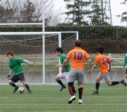
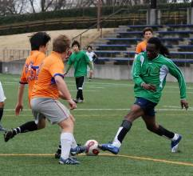
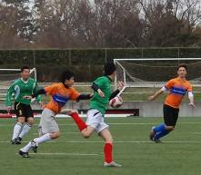
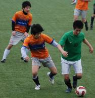

|
Hodogaya, Sunday 22nd March
Zion FC arrived at Hodogaya knowing that this was a really important game to win. The weather was chilly but good for soccer. We were well aware that Barbarians would put up a good fight as they always do.
The first game back in November saw Zion easily overpowered Barbarians 7-1. We didn’t expect to repeat this but we knew that a win would give us some breathing space from the chasing Albion Old Boys and YC&AC 2nds.
Barbarians won the toss and decided to change sides because the wind was blowing strongly the opposite direction. Of course with the help of the wind, Barbs were able to keep the ball most of the first half in Zion’s half with some good shots coming from both their strikers, keeping Zion’s keeper on his toes and making him pull of a couple of good saves.

Zion got in the groove and started to connect some passes. This paid off midway through the first half when Ken took a corner
And Barbs failed to clear properly, with some scrambling in the
18 yards box and Zion’s lengthy defender Matsuda finally jumping higher than the keeper to head it home making it 1-0.
The second half started with Barbs exerting much pressure on Zion’s defence and finally, Hideki Kageyama fired a powerful low shot beating the diving Maeda in the bottom right corner making it 1-1.
Zion’s striker Nixon ‘Benjie’ Dasilva was kept at bay in the first half and was substituted. He came back on midway through
the second half and with 3 minutes to go, headed home the winner to give Zion a well deserved 2-1 victory.
Report by Anthony

|